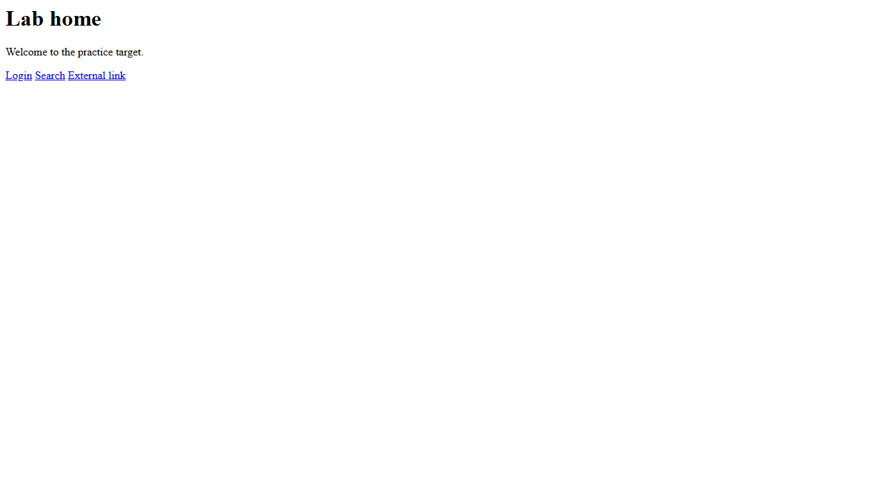

Meet requests and the HTTP protocol
Sending your first HTTP request and reading the status, headers and body that come back.
▶ Watch this part (01:11:39)This step starts the second module of the course: talking to web servers from Python. Before any security tool can test a web app it has to speak the web's language, and in Python that job belongs to one library: requests. Here we set up a tiny practice server you run on your own machine, send it a first request, and learn to read what comes back.
127.0.0.1 — your own computer talking to itself, which you are always allowed to test. Never aim these scripts at a site you do not own or have written permission to test. Read the Rules of engagement before you continue.What this step builds
The presenter opens the module by explaining that the web runs on HTTP, a simple request-and-reply conversation (at 1:12:30). A client sends a request ("please give me this page"); a server sends back a response ("here it is, and here is some extra information"). Every browser, scanner and API client on earth is doing exactly this underneath. We will do it from Python so we can read and measure each part.
Rather than practise against a real website, we wrote our own miniature web app, lab_server.py. It is our own, runnable version of the kind of small site the video demonstrates — but it lives entirely on your machine, so running the examples harms nobody and breaks no rules. You start it once in its own window and leave it running; every later step in this module (and the browser module too) sends requests to it.
The HTTP conversation
When the presenter introduces the GET method (at 1:11:39), the key idea is that a request is just text with a shape: a method (GET, POST, ...), a path (/login), some headers, and sometimes a body. The reply has the same shape: a status code (a number such as 200), its own headers, and a body (usually the HTML of the page). An analyst learns to read all four parts, because each one leaks something useful about the target.
Where the code runs
The lab needs two terminals at once: one is the server and must keep running; the other runs each example and exits. They talk over the loopback address 127.0.0.1, which never leaves your computer.
New to HTTP? What it is and why it matters
HTTP (HyperText Transfer Protocol) is the set of rules browsers and servers use to exchange pages. You ask for a resource by its URL; the server answers. It is plain text under the hood, which is why we can build and read it from Python so easily. Its encrypted sibling, HTTPS, wraps the same conversation in TLS so nobody in the middle can read it. For a deeper look, see the background handbook page on how HTTP works.
New to the terminal, or running two at once?
A terminal is a text window where you type commands. On Windows that is PowerShell or Command Prompt; on macOS or Linux it is Terminal. Open a second window (or a second tab) exactly the same way you opened the first. One command — our server — is designed never to finish on its own; it sits there serving requests until you press Ctrl+C. That is why it needs its own window: if you ran it in the only terminal you had, you would have nowhere left to run the examples.
New to 127.0.0.1 and localhost?
127.0.0.1 (also called localhost) is a special address that always means "this same computer". A request to it never reaches the internet or your network — it loops straight back to a program listening on your machine. That is what makes it the perfect practice target: it is unambiguously yours.
Step 1: start the practice lab
This is the server every web example talks to. It is a small, deliberate app: it echoes what you send, sets a couple of revealing headers, and hides a few paths — exactly the surface a real analyst learns to poke at, but safe and local.
"""A tiny LOCAL practice server so every example runs against a target you own.
Real security testing must only ever target systems you are authorized to test.
This server listens on 127.0.0.1 (your own machine) and deliberately behaves a
little like a small web app: it echoes query parameters, sets a few headers,
has a couple of "hidden" paths and a fake login form. Nothing here touches the
internet. Start it in one terminal, run the example scripts in another.
python lab_server.py # serves http://127.0.0.1:8099
Stop it with Ctrl+C.
"""
from http.server import BaseHTTPRequestHandler, HTTPServer
from urllib.parse import urlparse, parse_qs
import html
HOST, PORT = "127.0.0.1", 8099
# Paths the "content discovery" example is meant to find.
SECRET_PATHS = {"/admin", "/backup.zip", "/.env", "/robots.txt"}
class LabHandler(BaseHTTPRequestHandler):
server_version = "LabServer/1.0" # a banner a scanner would read
sys_version = ""
def log_message(self, *args): # keep the console quiet
pass
def _send(self, code, body, extra_headers=None):
data = body.encode("utf-8")
self.send_response(code)
self.send_header("Content-Type", "text/html; charset=utf-8")
self.send_header("X-Powered-By", "DemoApp/0.1") # tech-fingerprint clue
for k, v in (extra_headers or {}).items():
self.send_header(k, v)
self.end_headers()
self.wfile.write(data)
def do_GET(self):
parsed = urlparse(self.path)
params = parse_qs(parsed.query)
if parsed.path == "/":
self._send(200,
"<title>Practice Lab Home</title>"
"<h1>Lab home</h1><p>Welcome to the practice target.</p>"
"<a href='/login'>Login</a> <a href='/search?q=hi'>Search</a> "
"<a href='https://example.com'>External link</a>")
elif parsed.path == "/login":
# A real HTML form so the form-analysis example has something to read.
self._send(200,
"<h1>Login</h1>"
"<form action='/login' method='post'>"
"<input type='text' name='username' placeholder='user'>"
"<input type='password' name='password' placeholder='pass'>"
"<input type='submit' value='Sign in'>"
"</form>")
elif parsed.path == "/search":
# Reflects the 'q' parameter straight back - like a reflected-XSS sink.
# We escape it ONLY if the caller passes safe=1, so the lesson can show
# the difference between a safe and an unsafe reflection.
q = params.get("q", [""])[0]
shown = html.escape(q) if params.get("safe") else q
self._send(200, f"<h1>Results for: {shown}</h1>")
elif parsed.path == "/product":
# A number-like id; a single quote triggers a fake DB error, the classic
# sign a parameter is concatenated into SQL without sanitisation.
pid = params.get("id", [""])[0]
if "'" in pid:
self._send(500, "<h1>SQL error near \"'\": syntax error</h1>")
else:
self._send(200, f"<h1>Product {html.escape(pid)}</h1>")
elif parsed.path in SECRET_PATHS:
self._send(200, f"<h1>{parsed.path}</h1><p>Sensitive content.</p>")
else:
self._send(404, "<h1>404 Not Found</h1>")
def do_POST(self):
length = int(self.headers.get("Content-Length", 0))
body = self.rfile.read(length).decode("utf-8", "replace")
params = parse_qs(body)
user = params.get("username", [""])[0]
pw = params.get("password", [""])[0]
# One valid pair; everything else is rejected with 401.
if user == "admin" and pw == "correcthorse":
self._send(200, "<h1>Welcome admin</h1>")
else:
self._send(401, "<h1>Invalid credentials</h1>")
if __name__ == "__main__":
print(f"Lab server on http://{HOST}:{PORT} (Ctrl+C to stop)")
HTTPServer((HOST, PORT), LabHandler).serve_forever()Line by line
| Line(s) | Code | What it does & why |
|---|---|---|
| 1–12 | """A tiny LOCAL practice server...""" | The module docstring. It states the rule in writing (only target 127.0.0.1) and shows how to start the server. A good habit: say what a tool is for, right at the top. |
| 13 | from http.server import BaseHTTPRequestHandler, HTTPServer | Pulls a ready-made HTTP server out of Python's standard library, so we need no extra install to run a server. HTTPServer listens; BaseHTTPRequestHandler is the class we subclass to answer requests. |
| 14 | from urllib.parse import urlparse, parse_qs | Helpers that split a URL into its path and its query string, and turn ?q=hi into a Python dict. Without them we would parse the raw path by hand. |
| 17 | HOST, PORT = "127.0.0.1", 8099 | Binds the server to loopback only and to a high, unused port. Using 127.0.0.1 (not 0.0.0.0) means the lab is reachable only from your own machine. |
| 20 | SECRET_PATHS = {"/admin", "/backup.zip", "/.env", "/robots.txt"} | A set of "hidden" paths that still return 200. The content-discovery step later is meant to find exactly these. |
| 23–24 | class LabHandler(...): server_version = "LabServer/1.0" | Our request handler. Setting server_version makes the server announce a fake product name in its Server header — the fingerprinting clue we read in a later step. |
| 25 | sys_version = "" | Blanks out the Python version that http.server would otherwise append to the banner, keeping the header tidy and predictable. |
| 27–28 | def log_message(self, *args): pass | Silences the default per-request console logging so the server window stays quiet while you read the examples' output. |
| 30–38 | def _send(self, code, body, extra_headers=None): | One helper that writes a full reply: status line, a Content-Type, our fake X-Powered-By header, any extra headers, then the body as bytes. Centralising this keeps every endpoint consistent. |
| 40–42 | parsed = urlparse(self.path) / params = parse_qs(parsed.query) | Splits the incoming request into its path (e.g. /search) and a dict of query parameters. This is how the server knows what was asked for. |
| 44–49 | if parsed.path == "/": self._send(200, ...) | The home page: a title and three links (login, search, an external link). The browser module reads these links later; the <title> is "Practice Lab Home". |
| 50–58 | elif parsed.path == "/login": ...form... | Serves a real HTML login form that posts back to /login, so the form-analysis step has genuine fields to read. |
| 59–65 | elif parsed.path == "/search": shown = html.escape(q) if params.get("safe") else q | Reflects the q parameter straight into the page — unescaped by default (an unsafe reflection), but escaped when you add &safe=1. This single switch lets later steps show the difference between a dangerous and a safe echo. |
| 66–73 | elif parsed.path == "/product": if "'" in pid: self._send(500, ...) | A fake database error: a single quote in id returns HTTP 500 with a SQL-error message, imitating the classic sign that input is concatenated into a query. |
| 74–75 | elif parsed.path in SECRET_PATHS: self._send(200, ...) | Serves the "hidden" paths with 200 so content discovery can find them. |
| 76–77 | else: self._send(404, ...) | Anything else returns Not Found — the normal answer for a path that does not exist. |
| 79–89 | def do_POST(self): ... if user == "admin" and pw == "correcthorse": ... | Reads a posted login form. Exactly one pair succeeds (200); everything else is rejected with 401. The login-security step uses this to show a missing lockout, then the fix. |
| 92–94 | if __name__ == "__main__": HTTPServer((HOST, PORT), LabHandler).serve_forever() | Starts the server and serves forever. serve_forever() is why the window never returns to a prompt until you stop it with Ctrl+C. |
Step 2: send your first request
With the server running in Terminal 1, open Terminal 2 and run the first script. It sends one GET to the home page and prints the four things an analyst checks first.
- In Terminal 1, from the
code/requests/folder, runpython lab_server.py. You should seeLab server on http://127.0.0.1:8099 (Ctrl+C to stop). Leave this window open. - Open Terminal 2 in the same folder.
- Run
python 08_requests_intro.py. - Read the four lines it prints, then compare them with "What you should see" below.
"""First requests script: a GET request and reading the response.
requests is the standard Python library for speaking HTTP. Every web-security
tool uses it to send a request and inspect what comes back. Start lab_server.py
first, then run this.
"""
import requests
BASE = "http://127.0.0.1:8099"
# requests.get sends an HTTP GET and returns a Response object.
resp = requests.get(BASE + "/")
# The three things an analyst looks at first:
print("Status code:", resp.status_code) # 200 means OK
print("Server header:", resp.headers.get("Server"))
print("Body length:", len(resp.text), "characters")
print("First line of body:", resp.text.splitlines()[0])
# resp.text is the decoded body as a string; resp.content is the raw bytes.
# resp.headers is a case-insensitive dict of the response headers.Line by line
| Line(s) | Code | What it does & why |
|---|---|---|
| 1–6 | """First requests script...""" | Docstring reminding you to start lab_server.py first. If the server is not running, the request has nothing to connect to. |
| 7 | import requests | Loads the requests library — the one tool every later web script relies on. It is a third-party package (version 2.34.2 here), installed with pip. |
| 9 | BASE = "http://127.0.0.1:8099" | The lab's base URL in one place. Keeping it in a constant means every request points at the same local target and you can change it once if needed. |
| 12 | resp = requests.get(BASE + "/") | Sends an HTTP GET to the home page and returns a Response object. This one line is the whole request-and-reply loop from the diagram. |
| 15 | print("Status code:", resp.status_code) | Reads the numeric status. 200 means the request succeeded. It is the first thing to check on any response. |
| 16 | print("Server header:", resp.headers.get("Server")) | Reads one response header by name. resp.headers is a case-insensitive dict, so "Server" and "server" both work. Here it reveals our fake banner, LabServer/1.0. |
| 17 | print("Body length:", len(resp.text), "characters") | Measures the body. resp.text is the decoded page as a string, so len() gives its character count — a quick way to tell pages apart. |
| 18 | print("First line of body:", resp.text.splitlines()[0]) | Splits the body into lines and prints the first one, a cheap peek at the HTML without dumping the whole page. |
| 21–22 | # resp.text ... resp.content ... resp.headers ... | Comment notes for later: resp.text is the string body, resp.content the raw bytes, resp.headers the header dict. You will use all three as the module goes on. |
Response object; these four fields are what you read from it. Learn these names and most of requests follows.New to the requests library? Why not the standard library?
Python ships with urllib for HTTP, but it is clumsy: you build requests and decode bytes by hand. The requests library wraps all of that in a friendly call — requests.get(url) — and hands back a tidy Response object. Because nearly every Python security tool and tutorial uses it, learning it once pays off everywhere. Install it with pip install requests if it is not already present.

Lab server on http://127.0.0.1:8099 (Ctrl+C to stop) and then stays silent. In Terminal 2, 08_requests_intro.py prints:
Status code: 200
Server header: LabServer/1.0
Body length: 55 characters
First line of body: <h1>Lab home</h1><p>Welcome to the practice target.</p>200 confirms the request reached the server and succeeded. The Server header shows the fake banner we set. The body is 55 characters long, and its first line is the home-page heading.- Forgetting to start the server. If Terminal 1 is not running the lab, the script fails with
requests.exceptions.ConnectionError("connection refused"). Startlab_server.pyfirst and leave it running. - Running both commands in one window. The server never returns to a prompt, so you cannot type the next command there. Use a second terminal.
- Port already in use. If you started the lab twice you will see
OSError: [Errno 98] Address already in use(or10048on Windows). Stop the old one with Ctrl+C before starting again. - Wrong folder. Run both commands from
code/requests/sopython lab_server.pyfinds the file.
- HTTP is a request-and-reply conversation; requests lets Python take part in it.
- The lab (
lab_server.py) is your own safe target on127.0.0.1— start it in one terminal, run scripts in another. requests.get(url)returns aResponsewith.status_code,.headers,.textand.content.- A status of 200 and a readable body confirm everything is wired up for the rest of the module.
- Only ever point these tools at a target you own or are authorized to test.